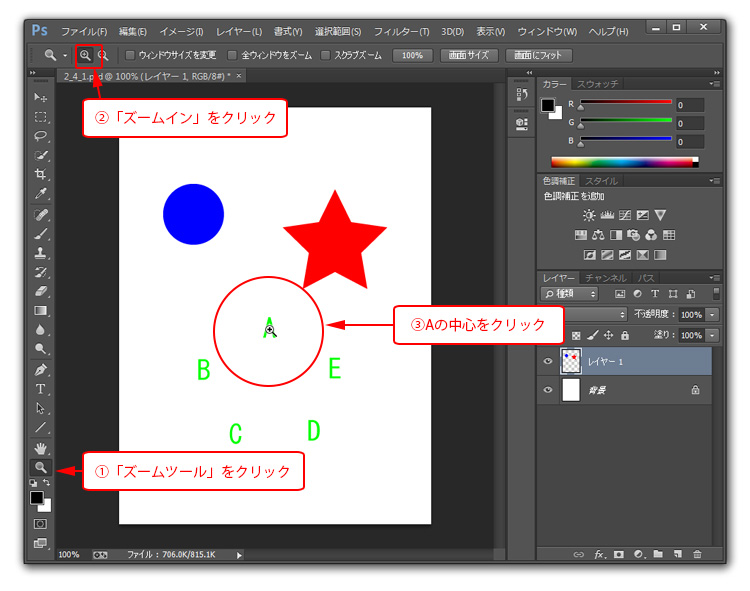
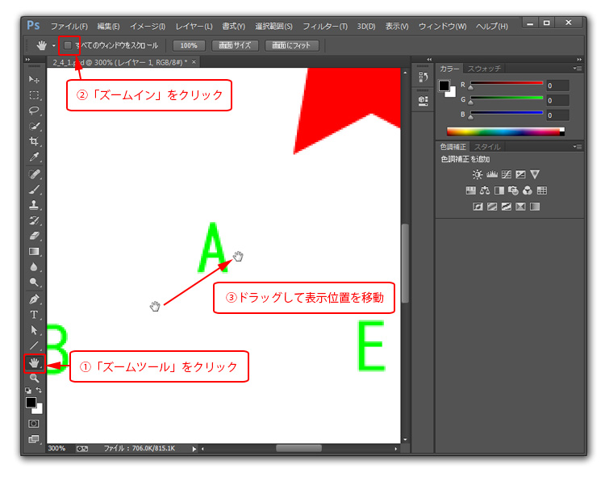

第2章 設定と基本操作
第4節 画面操作
本項では、手のひらツールの使用方法を学習します。
手のひらツールを使用することで、拡大表示した画像を自由に移動させ、
ウィンドウ枠外の見えない部分を表示させることができるようになります。
第2項 手のひらツールの使用
この項で学習する内容
- [手のひらツール]を使い、画面内を移動する方法を習得する。
手のひらツールを使用します
前項の素材ファイル2_4_1.psdを使用します。
[ズームツール]を使い画面中央にある「A」の文字を拡大表示しましょう。

[手のひらツール]を使用して画面上をドラッグすることで
画像の表示位置を変更することができます。
「A」 の位置から右上方向にドラッグすることで、
「A」の左下にある「B」の文字が画面中央に来るように操作しましょう。

うまく表示できたら続いて「C」→「D」→「E」と順番に表示できるよう練習してみましょう。
[手のひらツール]のショートカット
[手のひらツール]以外のツールを選択しているときでも、
キーボードの【Spaceキー】（Win/Macともに）を押している間は、
マウスカーソルが[手のひらツール]に変わり、画面内を自由に移動できるようになります。
また「ズーム」ツール同様、[手のひらツール]のアイコンをダブルクリックすると
どの倍率表示からでもすぐに全体表示に変更することができます。
非常に使用頻度の高い操作ですので、画面の拡大・縮小表示同様にショートカットを覚えましょう。
この項のまとめ
- [手のひらツール]を使った画面内移動
- ・[手のひらツール]で画面内をドラッグすることで、画面内を自由に移動できる。
・他のツールを使用している時でも、【Spaceキー】を押している間は[手のひらツール]に変化する。
・[手のひらツール]アイコンをダブルクリックすることで、全体表示に変更できる。
以上でこの節の学習は終了です。
ファイルは閉じて次の節へ進んでください。